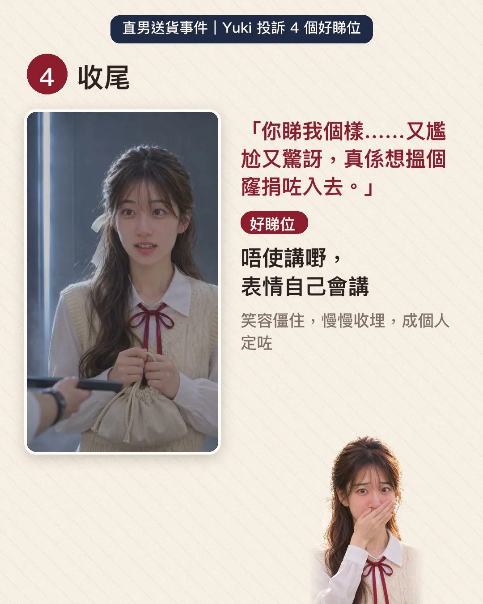
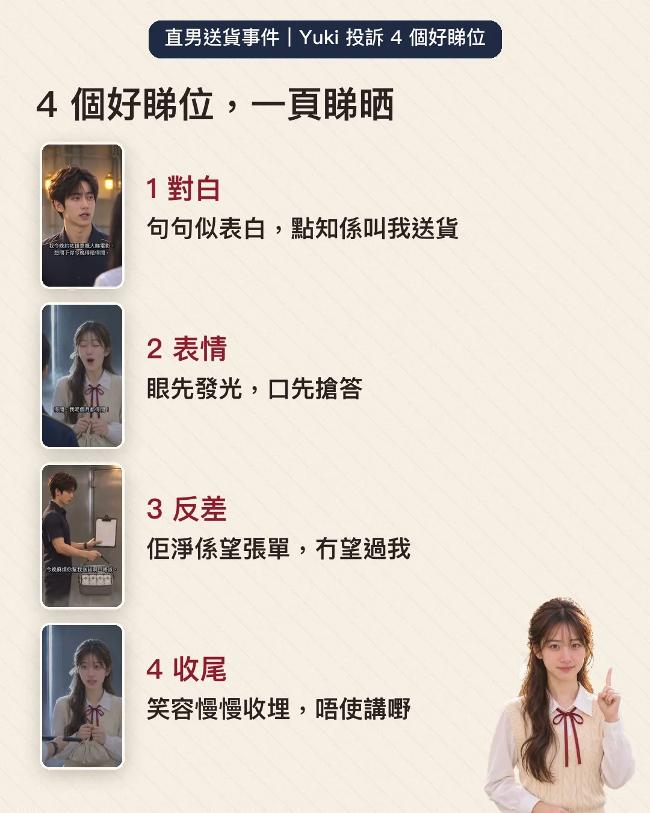

1
對白：句句似表白，點知係叫我送貨
Yuki 投訴：你話約咗鍾意嘅人睇電影，仲問我得唔得閒……邊個唔諗歪呀？
好睇位：佢講一句停一停，每句聽落都似表白，點知最後係叫我幫手送貨。
想自己拍到？寫誤會對白，每句寫低兩個意思：字面點聽、觀眾會諗歪去邊。兩邊都講得通，反轉先唔會覺得作。
2
表情：眼先發光，口先搶答
Yuki 投訴：我未聽完就搶住答，仲答成個月都得閒……丟臉死。
好睇位：我對眼發光嗰下好真：眉尖微微一提、嘴角忍唔住，笑容快過把口。
想自己拍到？想 AI 畫到呢種表情，寫五官位置（眼皮開幾多、眉尖、嘴角），唔好淨係寫「強忍」「深吸一口氣」呢類情緒字，唔係好易畫成傷心或者閉埋眼。
3
反差：佢眼淨係望住張單
Yuki 投訴：佢遞個夾板過嚟，講「……幫我送貨」，個樣仲要好認真。
好睇位：佢由頭到尾望住張單，冇望過我一眼，完全唔知自己講錯嘢。同一句說話，兩個人諗緊兩樣嘢。
想自己拍到？剪接時將反應鏡早少少切入：對方句尾未講完，已經見到另一個人塊面，反差即刻出嚟。
4
收尾：唔使講嘢，表情自己會講
Yuki 投訴：你睇我個樣……又尷尬又驚訝，真係想搵個窿捐咗入去。
好睇位：最後冇對白，淨係留我塊面：笑容僵住，慢慢收埋，成個人定咗。
想自己拍到？收尾唔一定要講出口。留一個表情畀觀眾自己補，佢哋會更想留言講。

✓
4 個好睇位，一頁睇晒
- 對白：句句似表白，點知係叫我送貨。
- 表情：眼先發光，口先搶答。
- 反差：佢淨係望張單，冇望過我。
- 收尾：笑容慢慢收埋，唔使講嘢。

一句講晒
佢講嘅係送貨，我聽到嘅係表白——好睇就喺中間嗰條罅。
你估 Yuki 會唔會幫手送？喺 FB／IG 條片留言講。
常見問題
Yuki 同顧朗係邊個？
佢哋係我哋短劇系列嘅角色：Yuki 暗戀顧朗，顧朗係送貨員，係個淨係望住啲貨嘅直男。
條片有幾長？
原片 17 秒，粵語對白，講一個以為係表白、點知係叫人送貨嘅誤會。
要識寫程式嗎？
唔使。呢頁講嘅係點樣睇畫面、寫對白同表情，同埋剪接嘅小位。
Yuki 最後有冇幫手送？
片入面冇講。你估呢？喺 FB／IG 條片留言講。